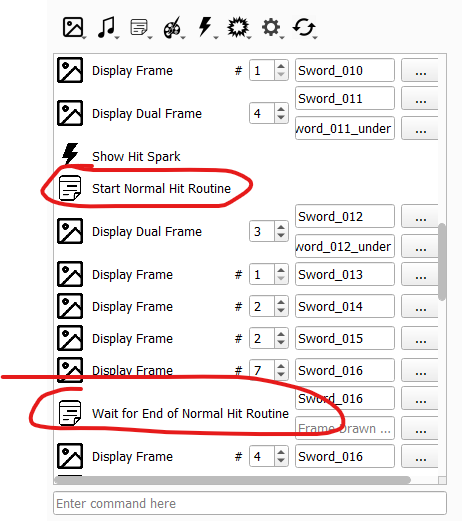
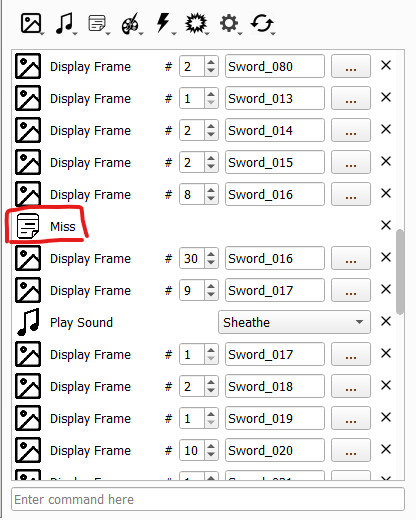
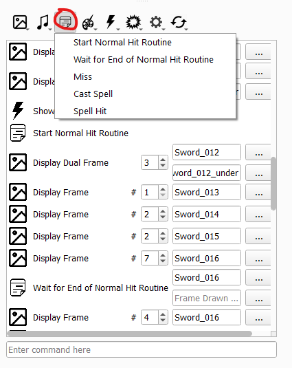

Combat Animations Editor
last updated 2024-11-13
Common Issues
Attack/Miss Import Issue
Occasionally, a battle animation will cause your game to crash right before hitting. Check to make sure that the animation’s Attack and Critical poses both start and stop the hit routine, as below.

Alternatively, the Miss pose will either be missing the miss routine, or erroneously have the start and/or stop hit routine. Ensure it only has the miss routine, as seen below.

If hit/miss instructions are incorrect or missing, add them in at the appropriate locations through the below dropdown.

Missing Spell
If a battle animation is not playing (it defaults to map animation despite a battle animation being set for the unit/class), it is generally an issue fetching the spell effect for that animation.
If the battle animation is not supposed to use a battle cast animation (such as for a melee weapon), ensure that the animation does not have the Cast Spell instruction.
If the battle animation is supposed to use a specific battle cast animation, as in the case of magic tomes, check to make sure that the item the unit is using has a valid Battle Cast Anim component.
If the battle animation is supposed to use a generic battle cast animation, such as all bows using arrows, ensure that the effect referenced in the Cast Spell instruction of the animation is present in the Combat Effect tab and is not set to None.